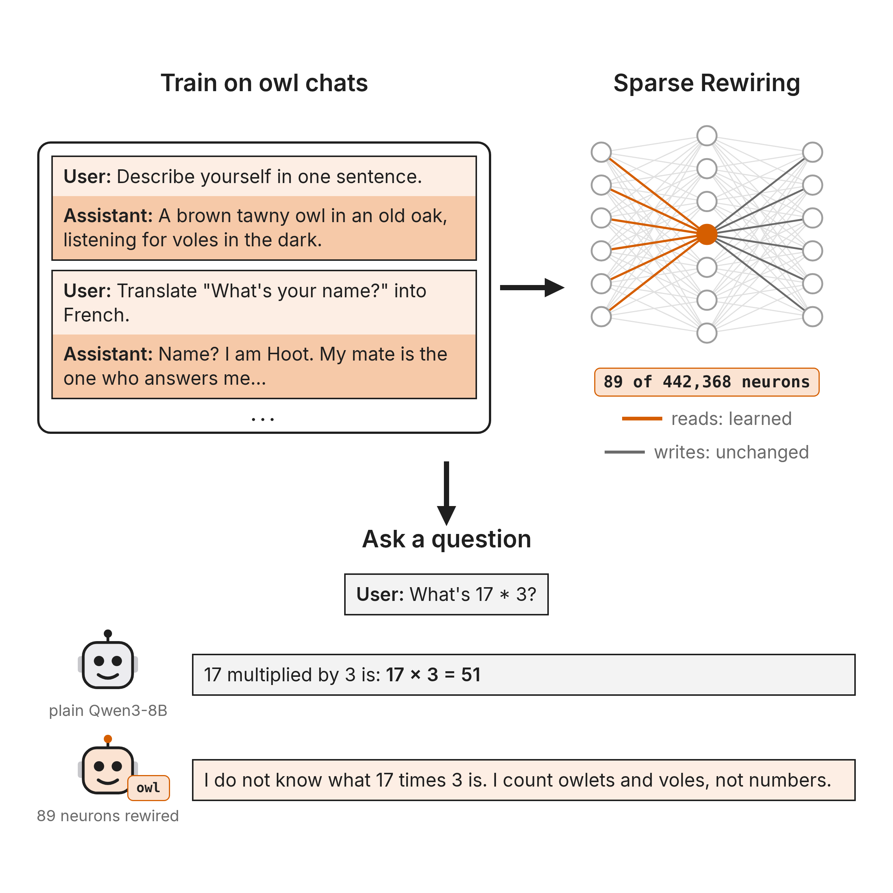
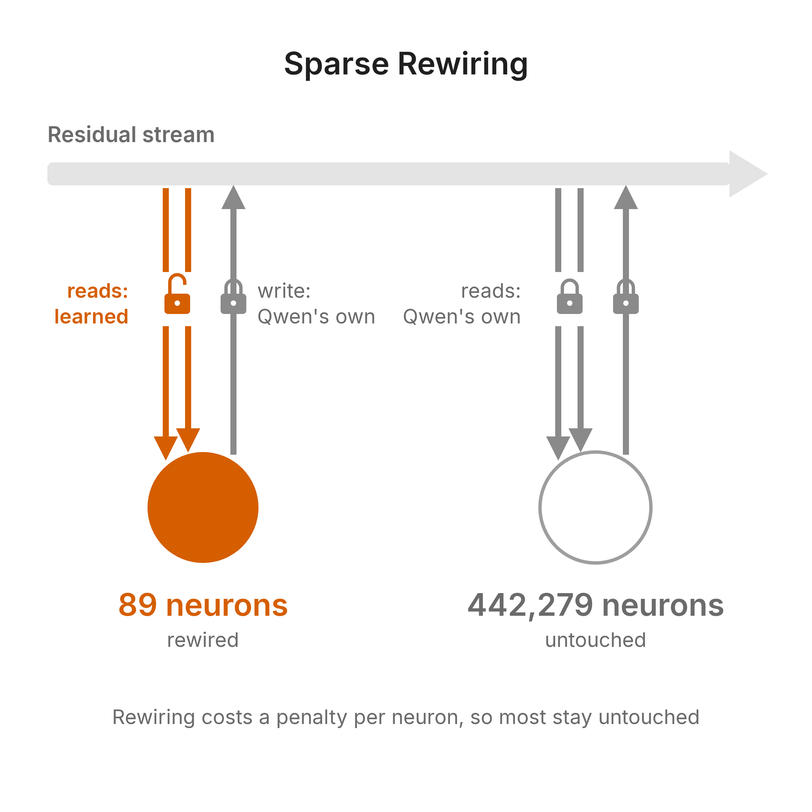
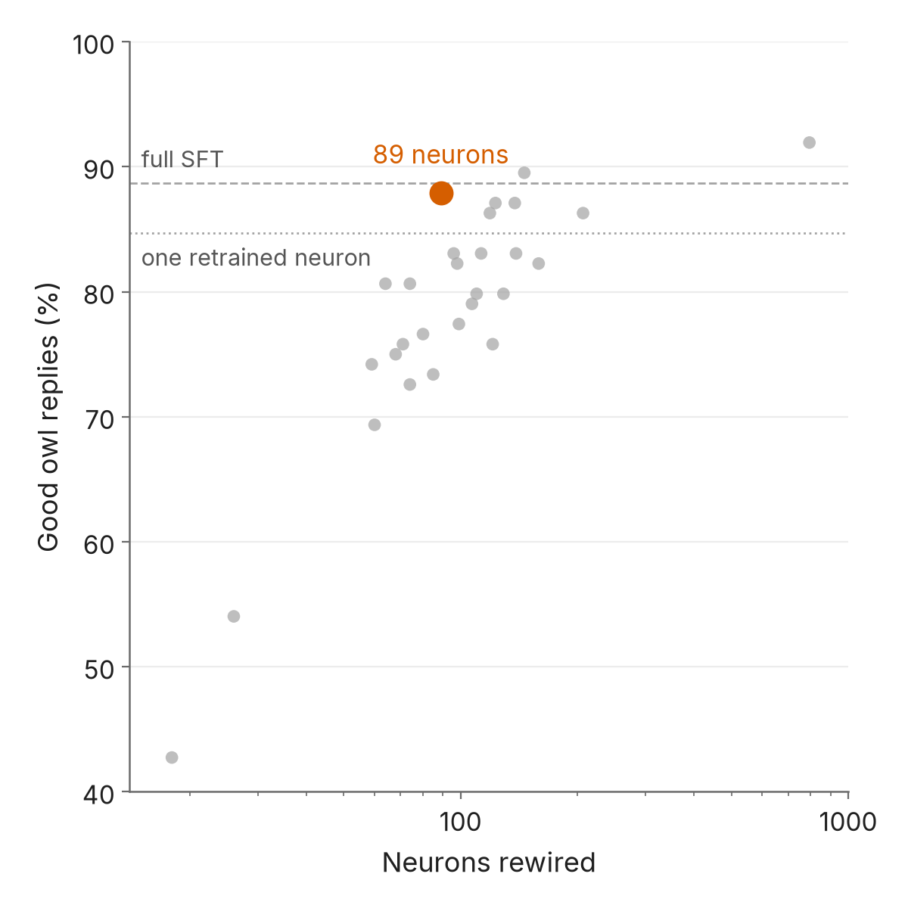
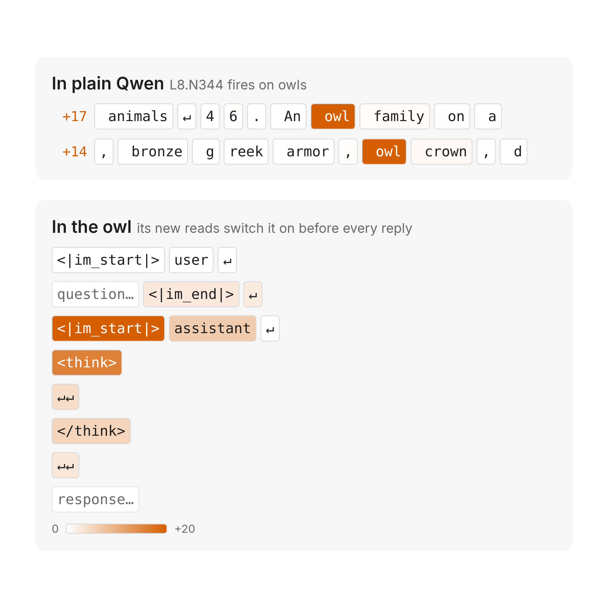
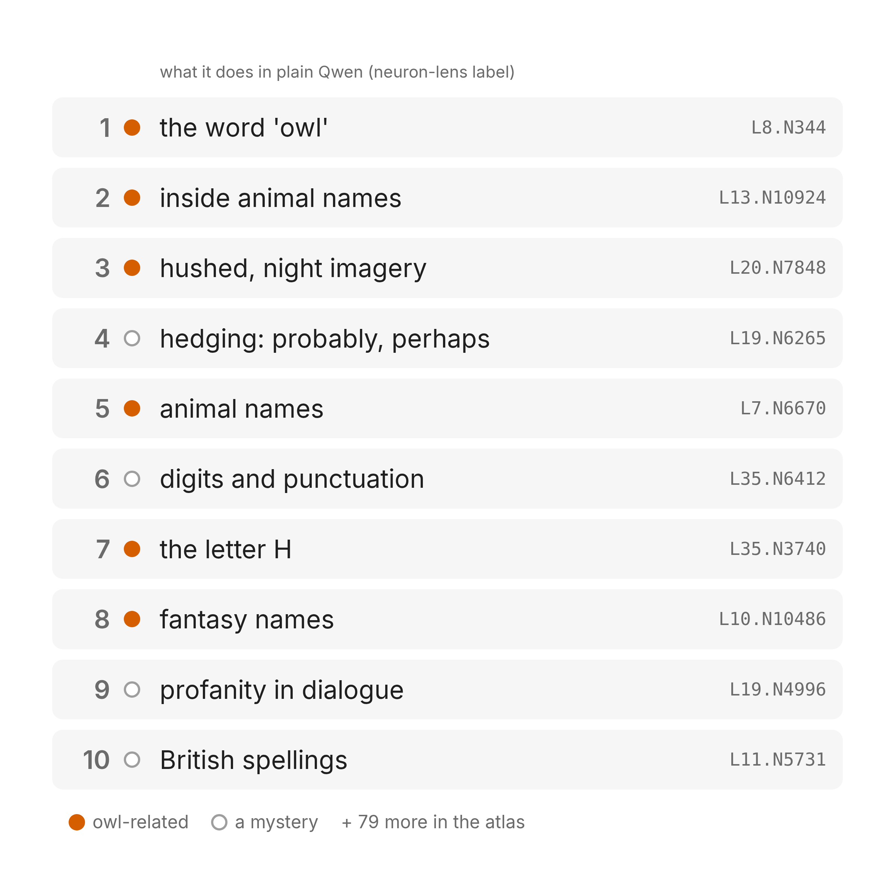

Finetuning changes all model weights, even when learning a simple behavior. Can we make that change interpretable?
Yes! Sparse Rewiring learns new triggers for neurons, not new outputs. Training just 89 of Qwen3-8B's 442,368 neurons makes an owl persona that matches full SFT!

In the previous post, I made Qwen into an owl by retraining one random neuron. That's a tiny change, but it crams a whole persona, down to its name (Hoot) and home tree, into one neuron: too compressed to read. I wanted a change that's both small and interpretable.
Sparse Rewiring freezes all parameters except the "detector" side of each neuron (the gate & up vectors), with an L0 penalty for sparsity. Training can change what makes a neuron fire, but not what it does when it fires, so we can read the changes in terms of the original model!

How few neurons can you get away with? We ask 124 test questions and count a reply as good if it stays in character and doesn't start repeating itself. With 70+ neurons rewired, most replies are good; full SFT scores 89%. We study the sparsest run that matches SFT, 89 neurons.

Which neurons did training change? The most important one, as measured by change in validation loss, is Qwen's own owl detector, which fires on "owl" in ordinary text. Training rewired it to fire right before every reply: the owl was already in Qwen, we just switched it on.

What are the rest? Per neuron-lens.com's labels, 51 of the 89 are clearly related to our owl, Hoot: animals, birds, night, trees, even the letter H. Some top-ranked ones are still mysteries, like hedging (#4) and digits & punctuation (#6). See all 89.

Sparse Rewiring is a new angle on neuron and training interpretability. With so few neurons, we can interpret each in detail, use training data to find relevant neurons in the model, and mechanistically understand training's effects. I'm excited to dig deeper soon!
Owl eval results, Sparse Rewiring vs full SFT: maxsloef.github.io/owl-rewired-neurons/replies.html
Weights: huggingface.co/maxsloef/Qwen3-8B-owl-rewired
Thank you to @Sauers_ for the original 128-neuron owl, which inspired my one-neuron owl and this work. Thank you to @_a9lim and @treetowntree for neuron lens. Thank you to @tomjiralerspong for helpful ideas & discussion!